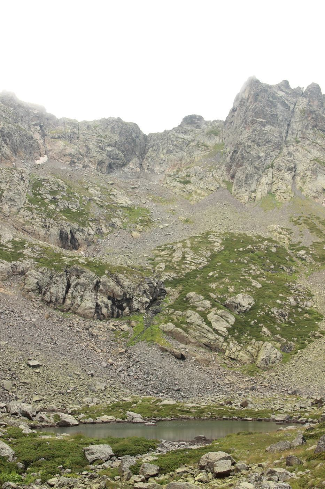
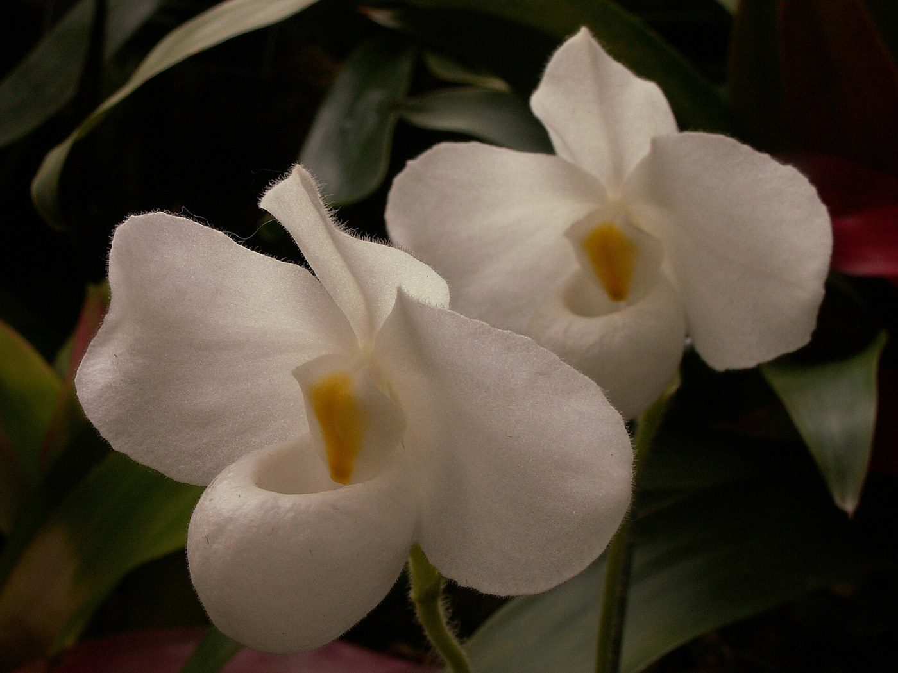
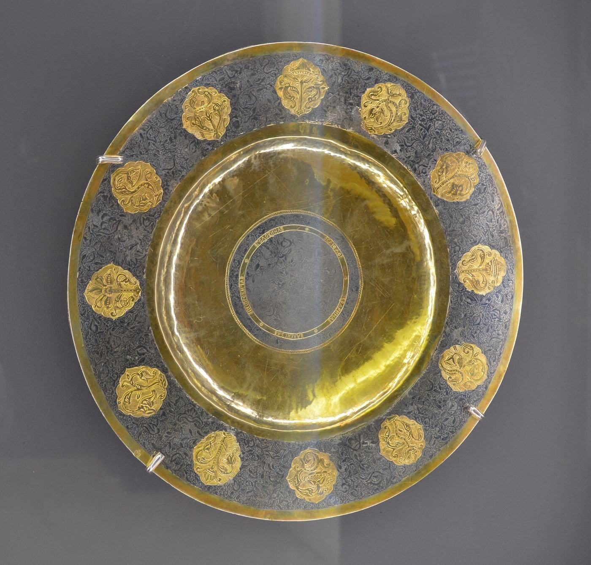

店のこと
ドアノッカーの部位の配置図
お店の詳しい情報は準備中です。ここでは、制作側が考えたデザインの考え方を紹介します。


制作側の連想
番号は、部位の番号
ホームの図にある1〜6の番号は、それぞれドアノッカーの部位の名前に対応します。ドアノッカーの部位を図にしたもので、制作側の連想です。お店の理念・由来とは無関係で、実際の金具の仕様を示すものでもありません。
1取付板
扉に固定する、金具全体の土台になる板。ほかの部位はすべてこの板に付いている。
2軸受け
板の上部に立つ小さな突起。ノッカーを吊るす軸を両側から支える部分。
3軸ピン
軸受けを横に貫く細い棒。ノッカーが前後に振れるときの支点になる。
4ノッカー
軸から吊り下がる輪の形の可動部。手で持ち上げて、落とすように使う。
5打ち座
板の下側にある、ノッカーが当たる丸い受け面。打つ音が出る場所。
6固定ねじ
取付板を扉に留める、上下二か所のねじ。頭にはドライバーの溝がある。
写真(イメージ)
写真(イメージ)




写真はイメージです。お店のものではありません。